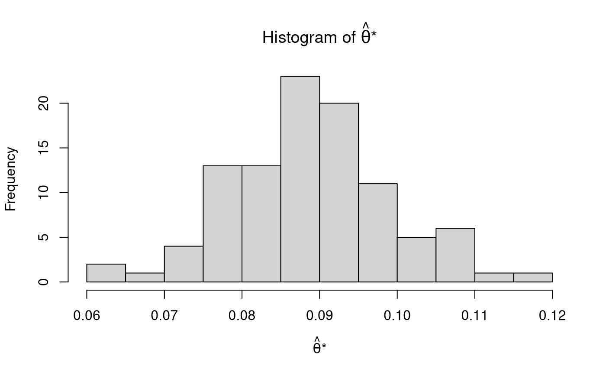

Calculates jackknife estimates.
jack_hat( thetahatstarjack, thetahat, alpha = c(0.001, 0.01, 0.05), eval = FALSE, theta = 0 )
| thetahatstarjack | Numeric vector.
Jackknife sampling distribution,
that is,
the sampling distribution of |
|---|---|
| thetahat | Numeric. Parameter estimate \( \left( \hat{ \theta } \right) \) from the original sample data. |
| alpha | Numeric vector.
Significance level
\(\left( \alpha \right)\) .
By default,
|
| eval | Logical.
Evaluate confidence intervals using
|
| theta | Numeric. Population parameter \( \left( \theta \right) \). |
Returns a list with the following elements:
Jackknife estimates.
Pseudo-values.
Confidence intervals using pseudo-values.
The first list element hat contains the following:
Mean of thetahatstarjack \(\left( \hat{\theta}_{\left( \cdot \right) } \right)\).
Jackknife estimate of bias \(\left( \widehat{\mathrm{bias}}_{\mathrm{jack}} \left( \theta \right) \right)\).
Jackknife estimate of standard error \(\left( \widehat{\mathrm{se}}_{\mathrm{jack}} \left( \hat{\theta} \right) \right)\).
Bias-corrected jackknife estimate \(\left( \hat{\theta}_{\mathrm{jack}} \right)\).
The jackknife estimate of bias is given by $$ \widehat{ \mathrm{ bias } }_{ \mathrm{ jack } } \left( \theta \right) = \left( n - 1 \right) \left( \hat{ \theta }_{ \left( \cdot \right) } - \hat{ \theta } \right) $$
where
$$ \hat{ \theta }_{ \left( \cdot \right) } = \frac{ 1 } { n } \sum_{ i = 1 }^{ n } \hat{ \theta }_{ \left( i \right) } . $$
The jackknife estimate of standard error is given by
$$ \widehat{ \mathrm{ se } }_{ \mathrm{ jack } } \left( \hat{ \theta } \right) = \sqrt{ \frac{ n - 1 } { n } \sum_{ i = 1 }^{ n } \left( \hat{ \theta }_{ \left( i \right) } - \hat{ \theta }_{ \left( \cdot \right) } \right)^2 } . $$
The bias-corrected jackknife estimate is given by
$$ \hat{ \theta }_{ \mathrm{ jack } } = \hat{ \theta } - \hat{ \mathrm{ bias } }_{ \mathrm{ jack } } \left( \theta \right) = n \hat{ \theta } - \left( n - 1 \right) \hat{ \theta }_{ \left( \cdot \right) } . $$
Pseudo-values can be computed using
$$ \tilde{ \theta }_{ i } = n \hat{ \theta } - \left( n - 1 \right) \hat{ \theta }_{ \left( i \right) } . $$
The standard error can be estimated using the pseudo-values
$$ \widehat{ \mathrm{ se } }_{ \mathrm{ jack } } \left( \tilde{ \theta } \right) = \sqrt{ \sum_{ i = 1 }^{ n } \frac{ \left( \tilde{ \theta }_{ i } - \tilde{ \theta } \right)^2 } { \left( n - 1 \right) n } } $$
where
$$ \tilde{ \theta } = \frac{ 1 } { n } \sum_{ i = 1 }^{ n } \tilde{ \theta }_{ i } . $$
An interval can be generated using
$$ \tilde{ \theta } \pm t_{ \frac{ \alpha } { 2 } } \times \widehat{ \mathrm{ se } }_{ \mathrm{ jack } } \left( \tilde{ \theta } \right) $$ with degrees of freedom \( \nu = n - 1 \) .
Wikipedia: Jackknife resampling
Other jackknife functions:
jack()
n <- 100 x <- rnorm(n = n) thetahat <- mean(x) xstar <- jack( data = x ) thetahatstarjack <- sapply( X = xstar, FUN = mean ) str(xstar, list.len = 6)#> List of 100 #> $ : num [1:99] 0.363 -1.3045 0.7378 1.8885 -0.0974 ... #> $ : num [1:99] 0.4682 -1.3045 0.7378 1.8885 -0.0974 ... #> $ : num [1:99] 0.4682 0.363 0.7378 1.8885 -0.0974 ... #> $ : num [1:99] 0.4682 0.363 -1.3045 1.8885 -0.0974 ... #> $ : num [1:99] 0.4682 0.363 -1.3045 0.7378 -0.0974 ... #> $ : num [1:99] 0.468 0.363 -1.305 0.738 1.889 ... #> [list output truncated]hist( thetahatstarjack, main = expression( paste( "Histogram of ", hat(theta), "*" ) ), xlab = expression( paste( hat(theta), "*" ) ) )jack_hat( thetahatstarjack = thetahatstarjack, thetahat = thetahat )#> $hat #> mean bias se thetahatjack mean_ps se_ps #> 8.884876e-02 0.000000e+00 1.518905e-16 8.884876e-02 8.884876e-02 1.015632e-01 #> #> $ps #> [1] 0.46815442 0.36295126 -1.30454355 0.73777632 1.88850493 -0.09744510 #> [7] -0.93584735 -0.01595031 -0.82678895 -1.51239965 0.93536319 0.17648861 #> [13] 0.24368546 1.62354888 0.11203808 -0.13399701 -1.91008747 -0.27923724 #> [19] -0.31344598 1.06730788 0.07003485 -0.63912332 -0.04996490 -0.25148344 #> [25] 0.44479712 2.75541758 0.04653138 0.57770907 0.11819487 -1.91172049 #> [31] 0.86208648 -0.24323674 -0.20608719 0.01917759 0.02956075 0.54982754 #> [37] -2.27411486 2.68255718 -0.36122126 0.21335575 1.07434588 -0.66508825 #> [43] 1.11395242 -0.24589641 -1.17756331 -0.97585062 1.06505732 0.13167063 #> [49] 0.48862881 -1.69945057 -1.47073631 0.28415034 1.33732041 0.23669628 #> [55] 1.31829338 0.52390979 0.60674805 -0.10993567 0.17218172 -0.09032729 #> [61] 1.92434334 1.29839276 0.74879127 0.55622433 -0.54825726 1.11053489 #> [67] -2.61233433 -0.15569378 0.43388979 -0.38195111 0.42418757 1.06310200 #> [73] 1.04871262 -0.03810289 0.48614892 1.67288261 -0.35436116 0.94634789 #> [79] 1.31682636 -0.29664002 -0.38721358 -0.78543266 -1.05673687 -0.79554143 #> [85] -1.75627543 -0.69053790 -0.55854199 -0.53666333 0.22712713 0.97845492 #> [91] -0.20888265 -1.39941046 0.25853729 -0.44179945 0.56859986 2.12685046 #> [97] 0.42485844 -1.68428153 0.24940178 1.07283825 #> #> $ci #> statistic p se ci_0.05 ci_0.5 ci_2.5 ci_97.5 #> NA NA 0.1015632 -0.2556056 -0.1778973 -0.1126746 0.2903721 #> ci_99.5 ci_99.95 #> 0.3555948 0.4333032 #>